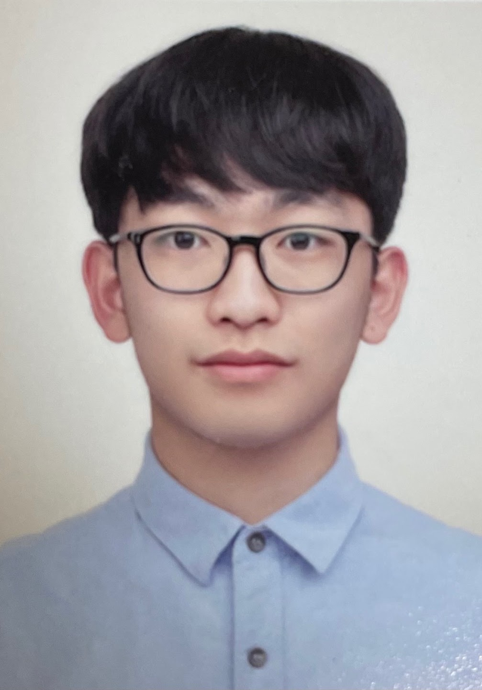

About me
Sungsu Jeon
Chemical Engineering
for a Sustainable Future
I am a fourth-year undergraduate student in Chemical and Biomolecular Engineering at Yonsei University. I studied as an exchange student at Purdue University.
From August 2025 to July 2026, I conducted undergraduate research in the Dong Research Group at Purdue University, supervised by Prof. Qi Dong. Before that, I was an undergraduate researcher in the Energy Conversion & Storage Lab, supervised by Prof. Jong Hyeok Park.
Research Interests
Electrochemistry & Sustainability
Electrocatalysis
CO₂ Electroreduction
Electrochemical Metal Separation
Rare Earth Element Recycling